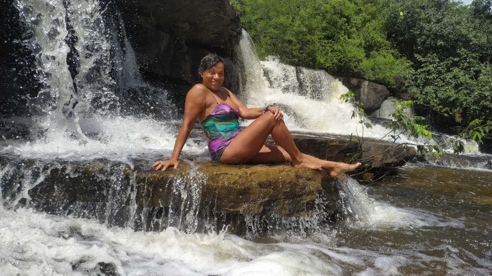

O aniversário da Letícia, nossa irmã mais velha em 2015, representou não apenas um aniversário, mas uma celebração de nossa união. Quando estamos juntos, especialmente em ocasiões como essa, sentimos uma satisfação que transcende palavras. São momentos que eternizam a felicidade em nossos corações e renovam nossas energias para enfrentar os desafios do dia a dia. É sempre uma grande satisfação quando estamos juntos nos sentimos mais felizes.

Barra do Sotero está situada na região norte do estado do Ceará, próxima ao Rio Sotero. A área é caracterizada por suas formações rochosas únicas e vegetação típica do sertão nordestino.
O distrito tem uma história rica e é conhecido por suas tradições e festividades locais. A comunidade de Barra do Sotero é acolhedora e tem um forte senso de identidade cultural, com diversas celebrações e eventos que reúnem moradores e visitantes.
A região de Barra do Sotero é parte de uma área protegida, e há esforços contínuos para preservar o meio ambiente e promover o ecoturismo. A comunidade local valoriza a conservação da natureza e trabalha para garantir que as belezas naturais sejam mantidas para as futuras gerações.
Se você tiver interesse em visitar Barra do Sotero, recomendo planejar sua viagem para aproveitar ao máximo as atrações naturais e culturais que a região oferece.
ATRAÇÕES TURÍSTICAS
Formações Rochosas:
As formações rochosas de Barra do Sotero são um dos principais atrativos turísticos da região. Essas formações naturais, esculpidas pela ação do vento e da chuva, lembram figuras de animais e paisagens surreais.
Trilhas e Passeios:
O distrito oferece trilhas e passeios que permitem aos visitantes explorar a natureza e apreciar as belezas locais.
Festas e Eventos:
Barra do Sotero é conhecida por suas festas tradicionais e eventos culturais que celebram a rica história e cultura da região.
Mulher incrível, dotada de uma voz suave e um coração carinhoso. Forte como uma rocha, ela trouxe ao mundo quinze filhos, dos quais doze estão vivos. Enfrentando desafios com graça e determinação, ela se dedicou a cada um deles, oferecendo amor incondicional e cuidado constante. Sua presença era um farol de esperança e inspiração, iluminando os caminhos de sua numerosa família.
Ela criou seus filhos com muita dignidade, inculcando em cada um deles valores profundos e o sentido de respeito. Com amor e dedicação, ela construiu um lar onde a união e a solidariedade prevaleciam, ensinando a importância de cada gesto de carinho e atenção. Seu legado de amor e força perdura, ecoando nas gerações futuras como um testemunho da sua coragem e do seu imenso coração.
Ele um homem trabalhador e amável, cuja dedicação à família era inigualável. Desde cedo, ele ensinou seus filhos a importância do trabalho, incentivando-os a ajudar em casa e a enfrentar os desafios do dia a dia. Com coragem e bom humor, ele encarava cada obstáculo, transformando dificuldades em oportunidades de aprendizado e união para seus filhos.
Infelizmente, apesar de seu espírito resiliente, ele não cuidava bem da própria saúde, e isso cobrou seu preço. Faleceu ainda jovem, deixando um vazio imenso, mas também um legado de amor, trabalho e determinação que continuou a inspirar sua família por gerações. Sua memória permanece viva nos corações daqueles que tiveram a sorte de conhecê-lo.